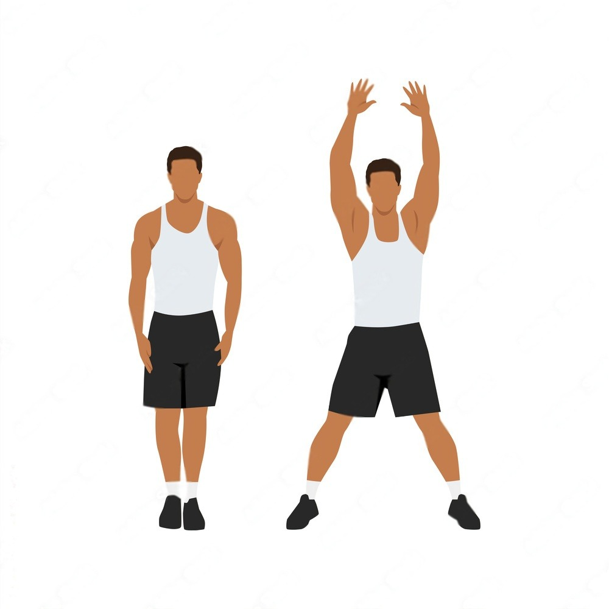
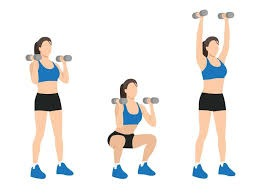
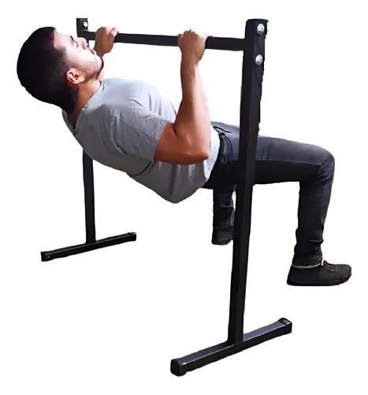
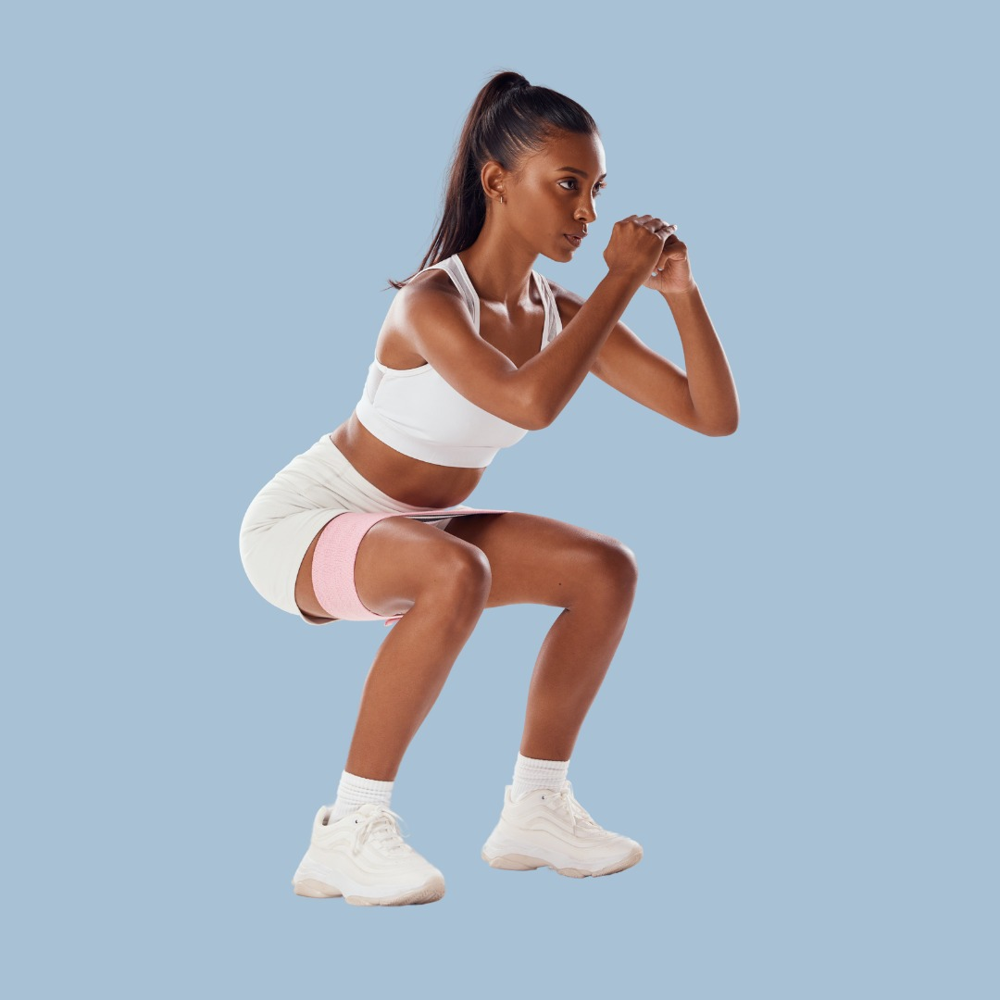
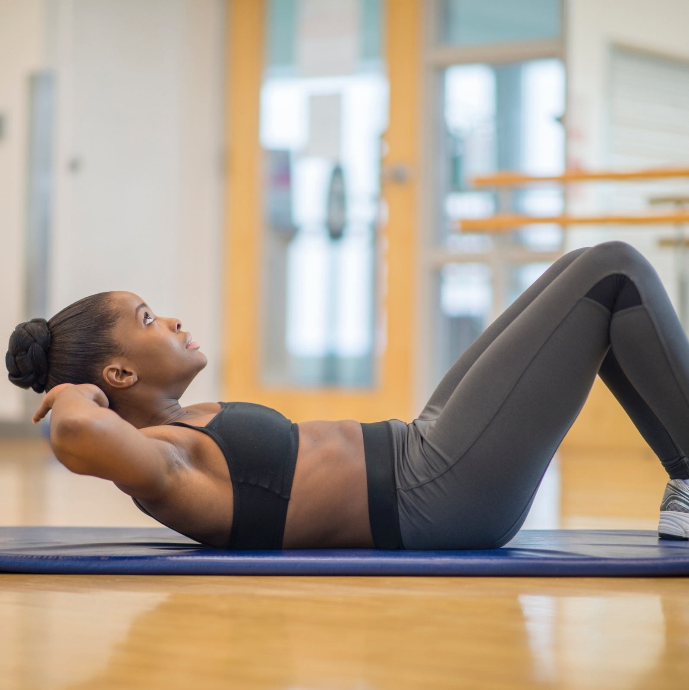
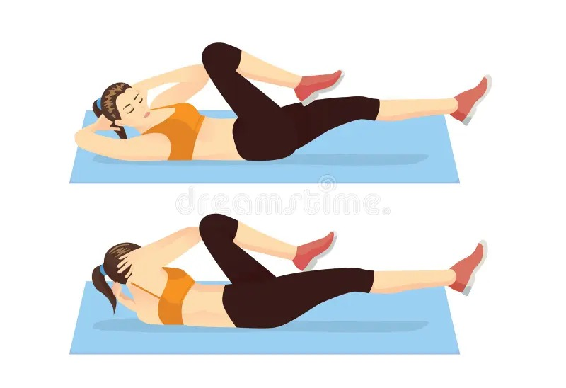
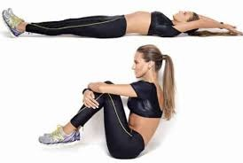
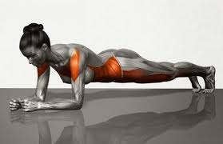

| Exercício | Séries | Repetições | Visualização |
|---|---|---|---|
| Mobilidade/alongamento | - | - | - |
| Polichinelo | 3 | 20 |  |
| Agachamento com desenvolvimento | 3 | 12 |  |
| Remada australiana corda | 3 | 10 |  |
| Agachamento (peso baixo) | 3 | 15 |  |
| Abdominal normal | 3 | 15 |  |
| Abdominal bicicleta | 3 | 12 |  |
| Abdominal remador | 3 | 12 |  |
| Prancha | 3 | 40s |  |
| Esteira ou bike | |||
| *Descanso de 40s entre as séries | |||